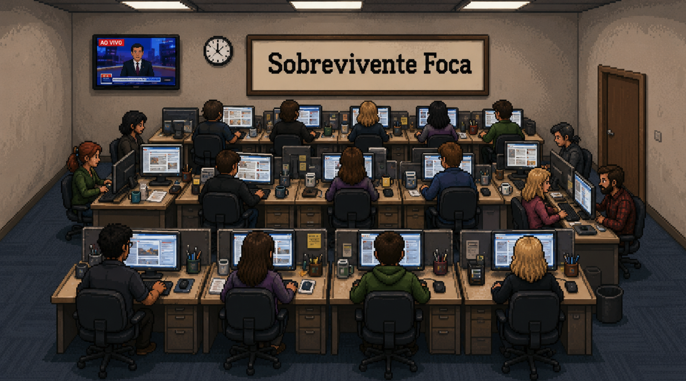

Parabéns, você acaba de ser selecionado como trainee de um dos maiores jornais do país. Agora você só precisa... sobreviver. Faltam 12 semanas de curso — aulas, apuração, fontes, cafés e muito prazo de fechamento.
Na salinha dos focas, cada apuração conta pontos. Junte o suficiente e vira matéria publicada. Mas cuidado: a pressão sobe, e ninguém sobrevive sozinho.
Este jogo não nomeia nem representa nenhum jornal, pessoa ou fato real. Todas as matérias, personagens e situações são fictícios. Feito de forma independente por Luiz Fernando Toledo apenas como protótipo experimental.
🔊 SOM — clique no botão destacado pra ligar / desligar o som do jogo a qualquer momento.
⛶ TELA CHEIA — clique no outro botão pra entrar em tela cheia (recomendado pra imersão).